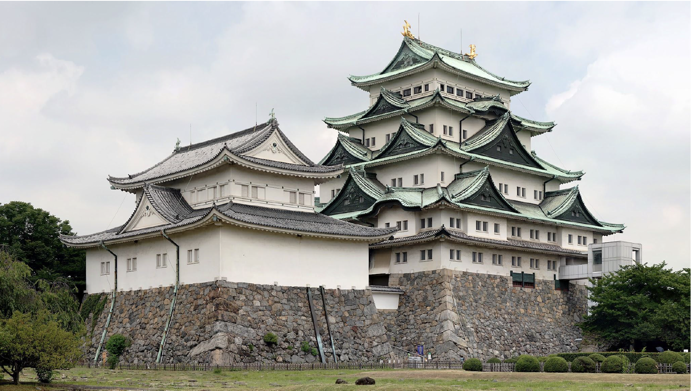
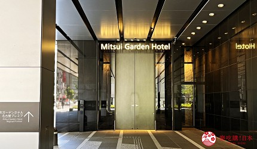
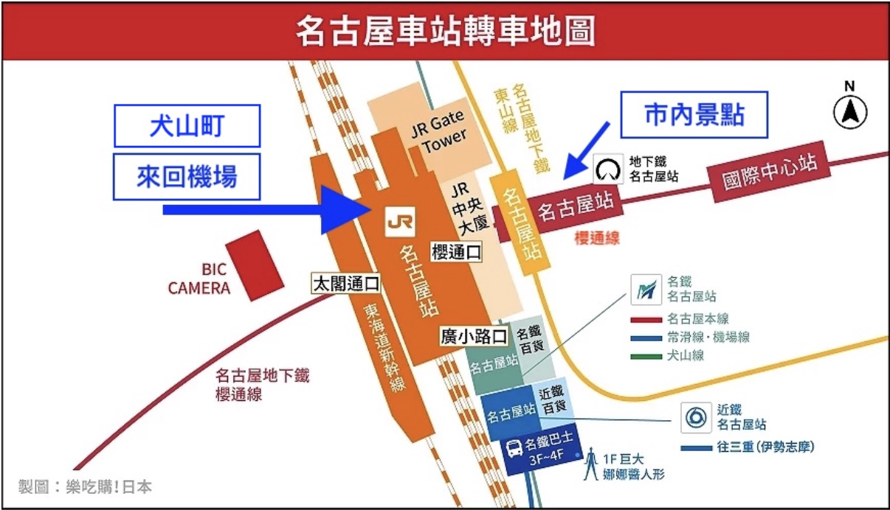
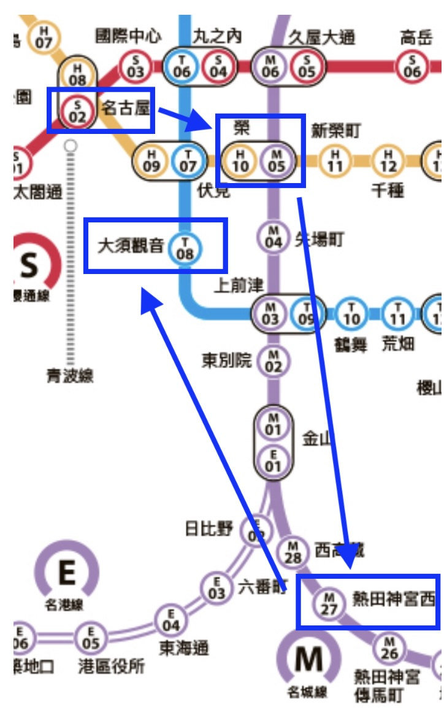
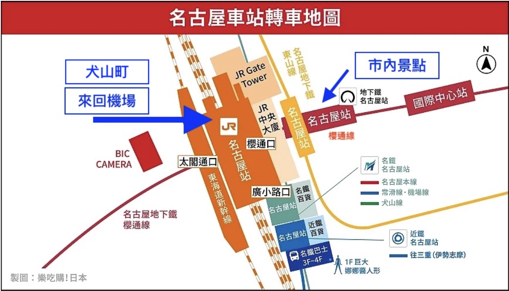
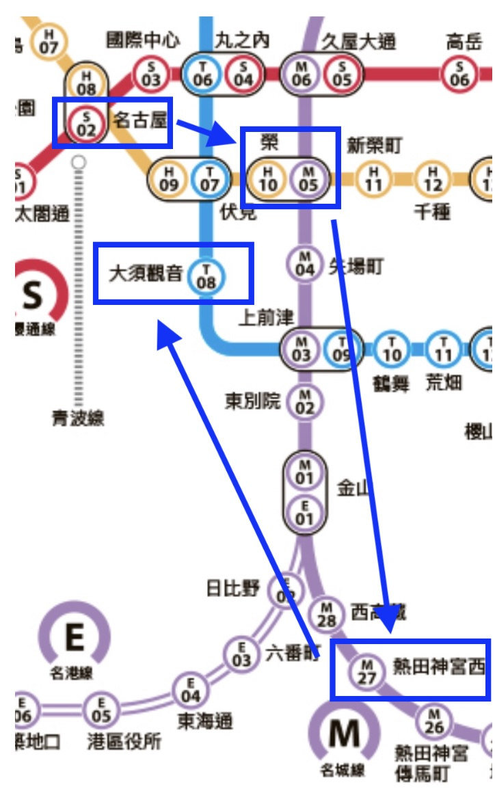
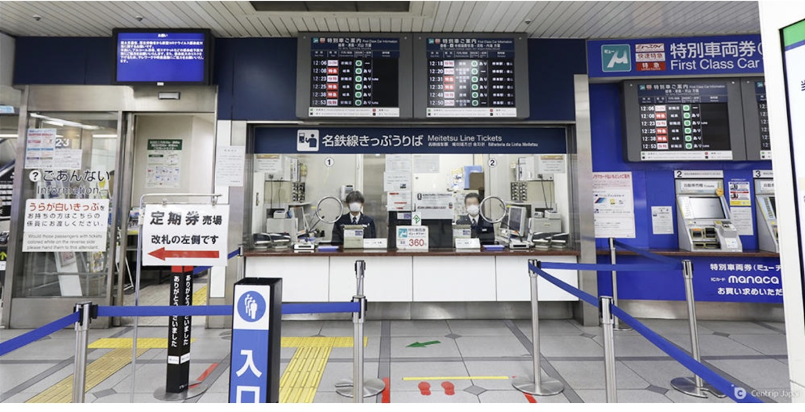
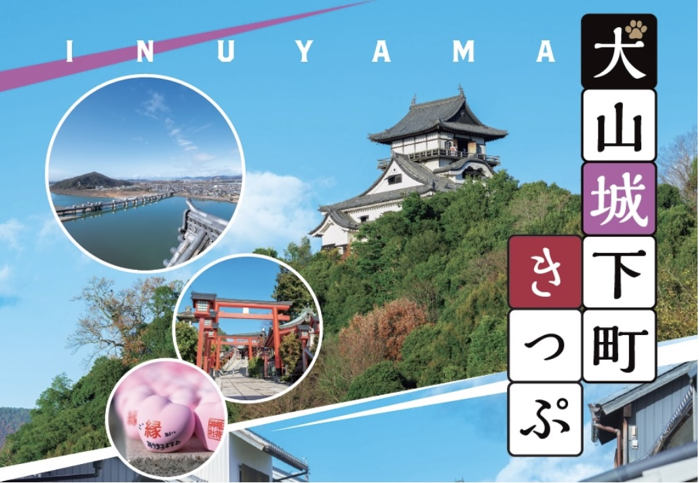
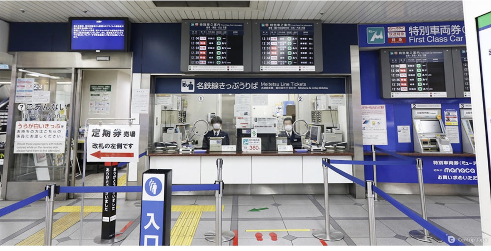
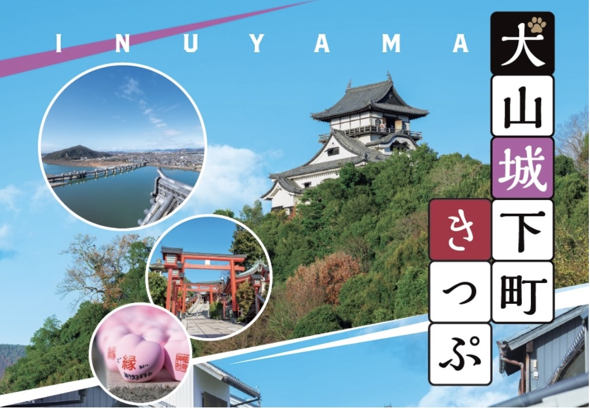

🏯 名古屋
🏯 名古屋
夏日冒險之旅
2025.07.29 ~ 08.01
👥 參與人員
✈️ 航班資訊
✈️ 去程 07/29 (二) 11:35 → 15:30
- 桃園機場第1航廈 (國泰 CX530)
🛬 回程 08/01 (五) 11:35 → 15:30
- 名古屋機場第1航廈 (國泰 CX531)
🏨 住宿資訊

三井花園飯店名古屋普米爾
(三井ガーデンホテル名古屋プレミア)
📍 4 Chome-11-27 Meieki, Nakamura Ward, Nagoya
📞 +81525871131
官網：https://www.gardenhotels.co.jp/
設施：溫泉浴場、早餐
📅 07/29 ~ 08/01 (4晚)
(三井ガーデンホテル名古屋プレミア)
📍 4 Chome-11-27 Meieki, Nakamura Ward, Nagoya
📞 +81525871131
官網：https://www.gardenhotels.co.jp/
設施：溫泉浴場、早餐
📅 07/29 ~ 08/01 (4晚)
Day 1: 07月29日 - 抵達名古屋
一、台北出發 🛫
08:35振洲送機，從板橋住所出發
11:35桃園機場第1航廈起飛
11:35桃園機場第1航廈起飛
二、抵達名古屋機場 🛬
15:30抵達名古屋機場2F入境大廳
- 啟用 e-sim
- 前往2F名鐵線車站購票
- 建議購買 μSKY列車(日文:ミュースカイ)- 指定座位，價格1,430日圓
μSKY 會有兩張票= 980日圓基本票 + 450日圓特別車票
🚊 前往住宿
🍽️ 晚餐 - 太閤通口ESCA 地下街
🛒 購物
Day 2: 07月30日 - 熱田神宮 & 大須商店街
• 名古屋JR車站與地鐵站
 • 本日地鐵路線

 • 本日地鐵路線

⛩️ 熱田神宮
地鐵路線：
• 地下鐵名古屋站(東山線:H08) → 榮(東山線:H10) 換車
• 榮 (名城線 左環（左回り），M05) → 熱田神宮西(名城線:M27)
• 榮 (名城線 左環（左回り），M05) → 熱田神宮西(名城線:M27)
🍜 午餐： 宮寬烏龍麵 神宮店
🌃 榮町商店街 & 下午茶
🍽️ 晚餐建議
回到名古屋車站用餐：
Day 3: 07月31日 - 犬山町一日遊
🎟️ 購買犬山町套票 (犬山城下町きっぷ)
• 在JR名古屋站 有人窗口購買 (是JR站，不是地下鐵)

• 成人票價：1,630日圓，出示這個圖去買


• 成人票價：1,630日圓，出示這個圖去買

🎫 套票內容
🚊 搭車方式
• 使用套票進入JR名古屋車站
• 尋找往犬山的月台 (通常是第1月台)
• 搭往「新鵜沼」或「犬山」的班車
• 注意：不要搭特急 (需加價450日圓)
• 尋找往犬山的月台 (通常是第1月台)
• 搭往「新鵜沼」或「犬山」的班車
• 注意：不要搭特急 (需加價450日圓)
🏯 犬山町觀光
犬山町攻略：
• 用「犬山城下町套票」玩遍犬山城＆老街
• 一篇搞懂犬山交通攻略&套票優惠
• 【犬山城下町】Top10美食必買推薦
犬山町必逛：
• 🏯 國寶犬山城
• ⛩️ 三光稻荷神社
犬山町必吃 (午餐好選擇)：
• 用「犬山城下町套票」玩遍犬山城＆老街
• 一篇搞懂犬山交通攻略&套票優惠
• 【犬山城下町】Top10美食必買推薦
犬山町必逛：
• 🏯 國寶犬山城
• ⛩️ 三光稻荷神社
犬山町必吃 (午餐好選擇)：
🍣
犬山牛太郎(和牛)：A5飛驒牛握壽司一定要知道！壽司兩貫一組，有芥末、蒜、薑三種口味任選，波比選最夯的芥末。
🍣
肉兵衛(和牛)：一樣主打最高等級的A5飛驒牛握壽司。No.1炙烤飛驒牛握壽司，三貫一入，肉感偏生吃不太出炙燒感，牛肉香氣沒有很明顯，醬油滋味甘甜。
🍢
壽俵屋 (烤串) ：最熱賣的「醤油おこげ串」，圓滾滾烤飯糰搭配醬油，飯的比例較多整體不會太鹹，搭配小黃瓜等醃漬物醬菜頗為解膩。
🍢
Tonamaru (串炸)：少女心噴發～五彩繽紛的串炸，光看就讓人著迷，有雞肉、豬肉、鮮蝦三種口味可選。
🍰
芳川屋 (冰淇淋)：主打冰淇淋加上當季新鮮現切水果，波比選草莓，草莓牛奶冰淇淋，濃郁牛奶味中帶有鮮明酸甜草莓香，搭配鋪著滿滿的新鮮草莓，切成愛心圖樣可愛又好吃
🍡
恋小町だんご：販售顏色繽紛、造型可愛的創意糰子，口味選擇多多，拿在手上馬上少女心噴發！
🍢
一千坊：是販售牛肉燒烤串物的小攤，我們點了牛臀肉和板腱，調味都很不錯，肉質鮮嫩多汁，非常推薦必嚐
🍡
山田五平餅店：是「犬山城下町」最具知名度的店家，曾經有許多電視節目來採訪過
🍰 1ST
TERRACE (咖啡廳)：必吃鬆餅，甜款會加上一大球鮮奶油和醇濃冰淇淋，另外也有幾款鹹食可選擇，鬆餅的份量不大，一人份恰恰好！
🍰 COCOTOMO
FARM
(犬山城三之丸店)：來到犬山必買「COCOTOMO FARM」年輪蛋糕，裡面空間寬敞，還有免費試吃和奉茶！
🛒 晚餐與採買
Day 4: 08月01日 - 回程
🏨 飯店準備
08:00飯店早餐
11:00Check-out
11:00Check-out
✈️ 機場流程
12:00抵達名古屋機場/採買/午餐
14:30Check-in
15:50到登機口
16:35飛機起飛
14:30Check-in
15:50到登機口
16:35飛機起飛
🛍️ 購物清單
MEISHOKU 明色 - Moist Labo 礦物BB散粉5.5g SPF50
防蚊液 - おすだけベープ